UX/UI
NURSSI, Assistant on a Wrist For Nurses

App/Web, Smartwatch
Team project (participated in UX strategy, interface design)
Team project (participated in UX strategy, interface design)
NURSSI is a nursing support service developed from insights gathered through interviews with practicing nurses.
By connecting a mobile app, smartwatch, and hospital systems, it streamlines workflows and helps reduce the physical and emotional burden of nursing work.
This project is presented as a conceptual service designed to resemble a real-world product.
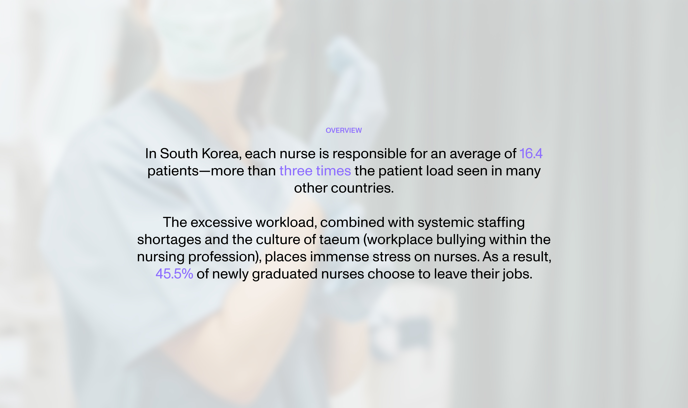
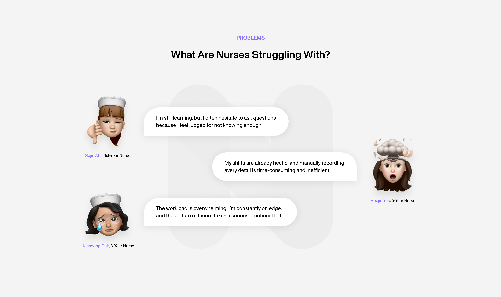
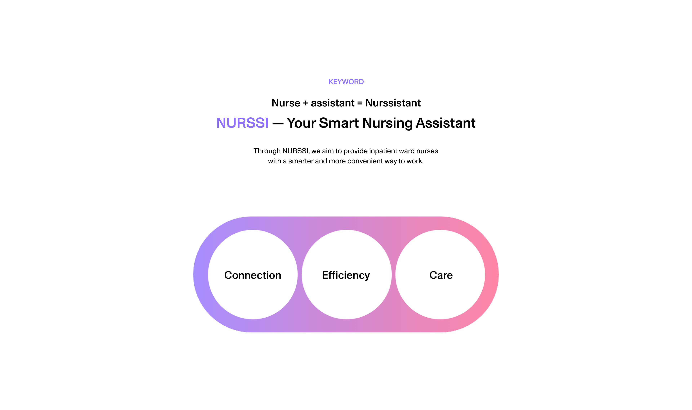
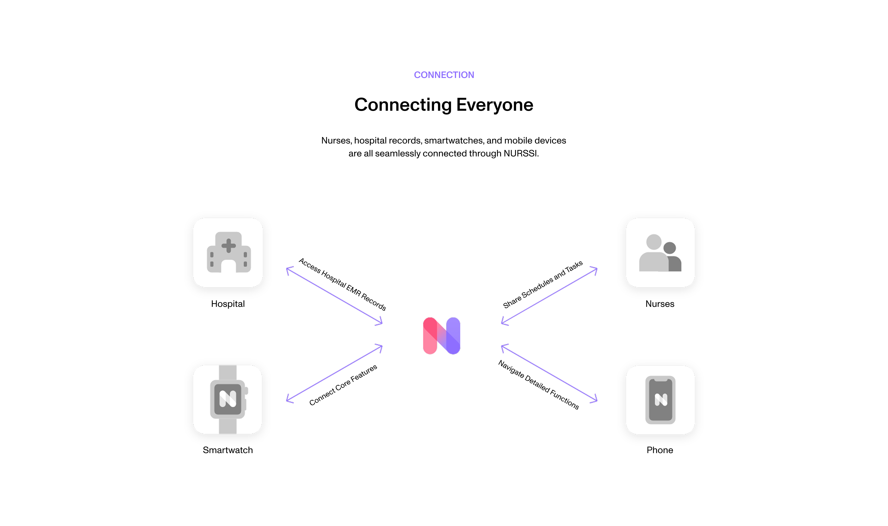
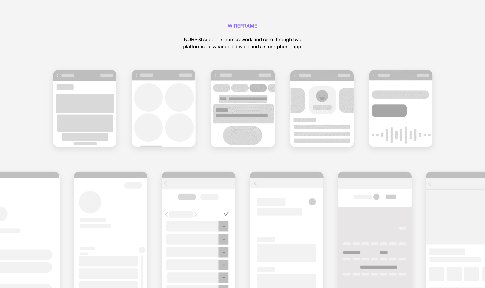
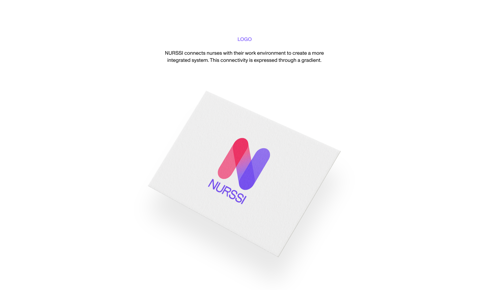
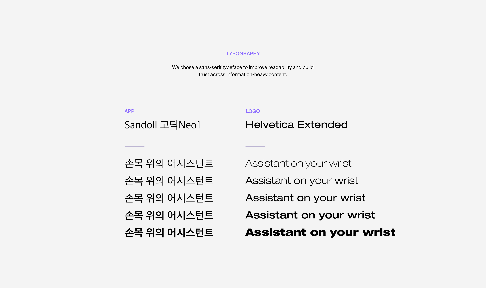
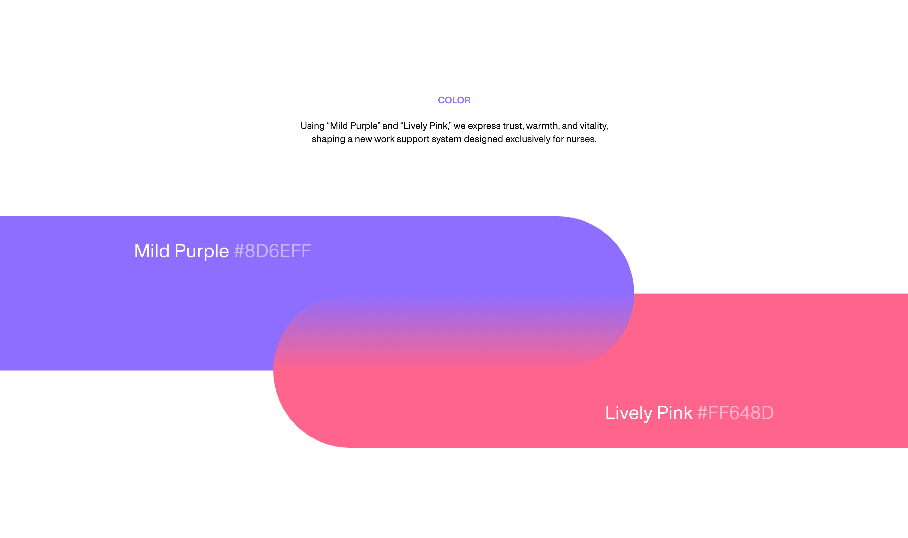
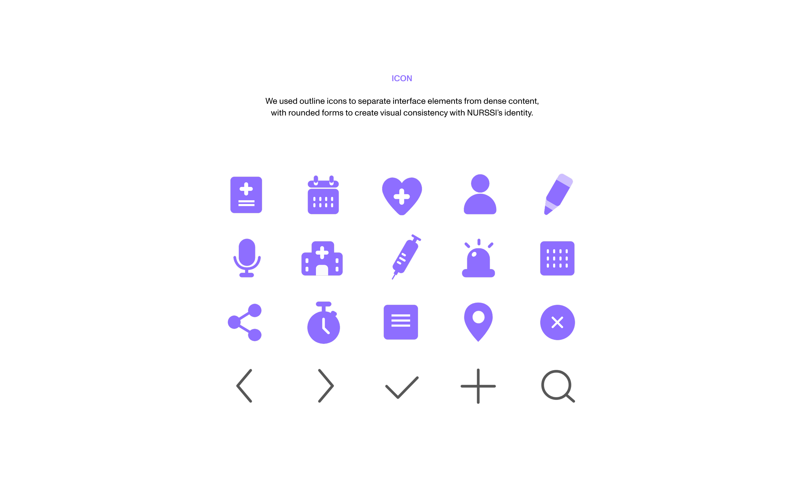
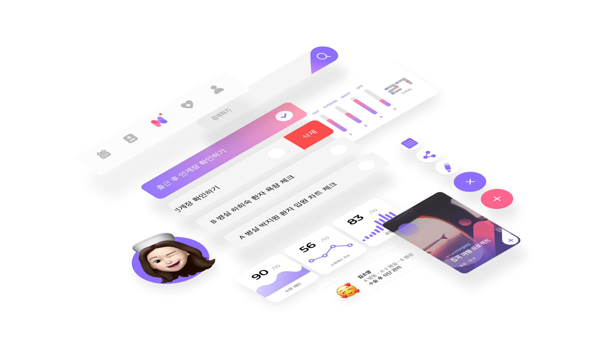

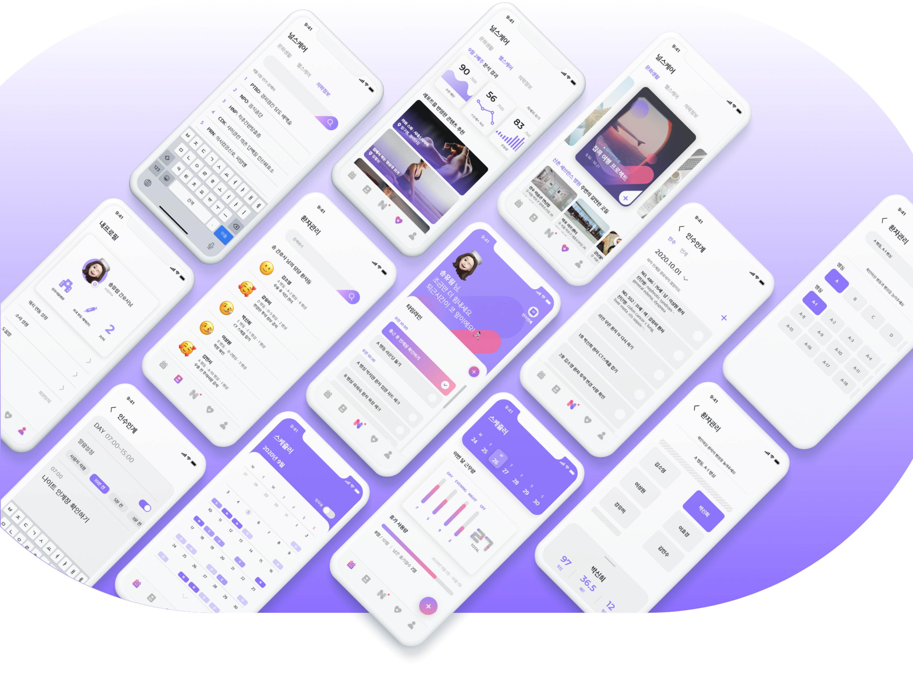